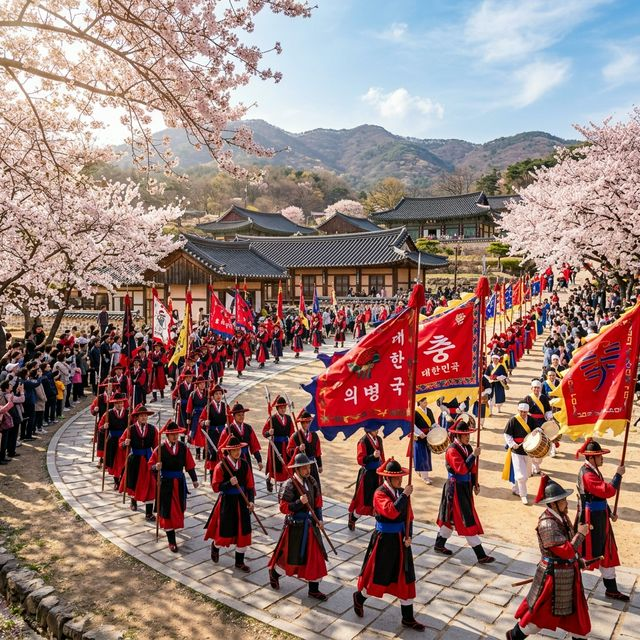
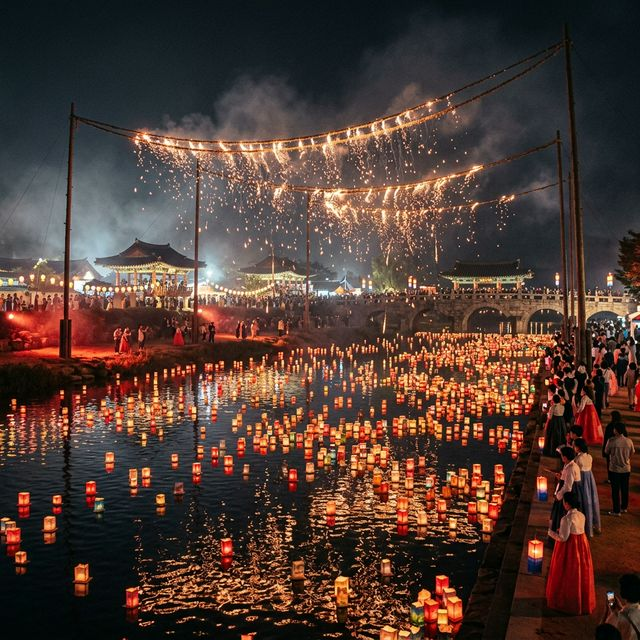
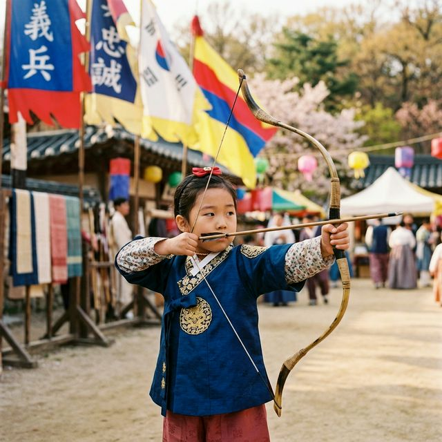

의령 홍의장군축제 2026 일정 리포트 — 의병 출정 퍼레이드부터 3대 미식 투어까지
경상남도 의령군에서 펼쳐지는 2026 의령 홍의장군축제는 '의병의 성지'로서의 자부심을 온몸으로 느낄 수 있는 대한민국 대표 역사 문화 축제입니다. 4월 16일부터
19일까지 4일간 진행되는 이번 행사는 곽재우 장군과 의병들의 숭고한 정신을 계승하며, 화려한 불꽃놀이와 퍼레이드, 그리고 의령만의 독특한 미식 경험을 제공합니다. 봄바람과 함께 들려오는 의병의 함성을
찾아 떠나는 여행, 지금 시작합니다!

의령 홍의장군축제의 상징인 의병 출정 퍼레이드 재현 모습 | AI 제작 이미지
1. 2026 의령 홍의장군축제: 역사적 배경과 축제의 가치
의령은 임진왜란 당시 전국 최초로 의병을 일으킨 망우당 곽재우 장군의 고장입니다. 축제장에 들어서면 가슴 한구석이 웅장해지는 공기를 느낄 수 있는데, 이는 단순한 유희를 넘어
나라를 지키기 위해 일어섰던 평범한 백성들의 용기가 서려 있기 때문입니다. 2026년 축제는 '함께하는 의병, 희망의 의령'이라는 주제로 더욱 확장된 스케일을 자랑하며 방문객들을 맞이하고
있습니다.
행사장은 의령군민공원(구 서동생활공원)을 중심으로 조성되어 있으며, 4월의 신록이 우거진 남강변의 정취가 축제의 분위기를 한층 고조시킵니다. 곳곳에서 들려오는 전통 낙화놀이의 화약 냄새와 의병들의 훈련 모습을
재현한 함성 소리는 마치 430여 년 전의 그날로 되돌아간 듯한 착각을 불러일으킵니다. 이곳에서 우리 조상들이 지켜냈던 평화의 소중함을 다시금 되새겨보는 시간을 가질 수 있습니다.
전문가들은 의령 홍의장군축제가 지역 축제를 넘어 국가적 브랜드로 성장하고 있다고 분석합니다. 통계에 따르면 지난해 방문객의 40% 이상이 타 지역 거주자였으며, 역사 교육과 엔터테인먼트가 결합된 에듀테인먼트형
축제로서의 독보적인 위치를 점하고 있습니다. 올해는 디지털 기술을 접목한 미디어 파사드와 드론쇼가 추가되어 전통과 현대의 완벽한 조화를 보여줍니다.
2. 축제의 첫날: 홍의야행(紅衣夜行)의 신비로운 밤
4월 16일 목요일 저녁 6시 30분부터 시작되는 홍의야행은 축제의 서막을 알리는 아름다운 야간 행사입니다. 의령천을 따라 설치된 수천 개의 등불이 수면 위로 은은하게 번지며,
밤공기에는 봄꽃의 향기와 시원한 강바람이 섞여 흐릅니다. 물길을 따라 걷다 보면 마치 시간이 멈춘 듯한 평화로운 분위기에 젖어들게 되는데, 가족이나 연인과 함께 조용히 대화를 나누며 걷기에 최적의
코스입니다.
야행의 하이라이트는 남강 위에서 펼쳐지는 수상 불꽃쇼와 미디어 아트 공연입니다. 어둠 속에서 솟구치는 불꽃은 곽재우 장군의 붉은 옷(홍의)을 상징하며, 밤하늘을 수놓는 화려한 빛의 향연은 보는 이들의 탄성을
자아내기에 충분합니다. 발걸음을 옮길 때마다 들려오는 잔잔한 국악 선율은 시각과 청각을 동시에 만족시키며, 의령의 밤이 가진 깊은 미학을 온전히 전달합니다.
특히 올해는 '낙화놀이' 체험을 강화하여 남강물 위로 떨어지는 불꽃 송이를 가까이서 관찰할 수 있는 구역을 확대했습니다. 화약을 한지 봉지에 담아 줄에 매달아 태우는 이 전통 방식은 인위적인 전기 조명이 줄
수 없는 따뜻하고 자연스러운 빛을 내뿜습니다. 이러한 전통적 연출은 인스타그램이나 유튜브 등 SNS를 즐기는 젊은 층에게도 '뉴트로' 감성을 자극하며 큰 인기를 끌 것으로 예상됩니다.

의령천을 수놓는 홍의야행의 환상적인 야경 | AI 제작 이미지
3. 축제의 정점: 의병출정 퍼레이드 & 횃불행진
축제 이튿날인 4월 17일 금요일 오후 6시부터는 가장 기대를 모으는 의병출정 퍼레이드가 펼쳐집니다. 의령 시가지를 가득 메우는 수백 명의 재현 행렬은 붉은 옷을 입고 칼을 든
곽재우 장군을 선두로 기마대와 보병, 취타대가 뒤를 잇습니다. 거리에는 말발굽 소리와 거친 금관악기의 소리가 울려 퍼지며, 구경하는 시민들의 뜨거운 박수 소리가 어우러져 장엄한 장관을
연출합니다.
퍼레이드가 끝나면 어둠이 깔린 축제장에서 횃불행진이 이어집니다. 수천 명의 군민과 관광객이 횃불을 들고 강변을 행진하는 모습은 임진왜란 당시 야간 기습 작전을 펼쳤던 의병들의
필승 결의를 상징합니다. 횃불에서 뿜어져 나오는 열기와 타오르는 소리는 참가자들의 가슴속에 뜨거운 열정을 지피며, 모두가 하나 되어 대한민국의 안녕을 기원하는 감동의 순간을 만들어냅니다.
행정안전부의 안전 가이드에 따라 올해는 LED 횃불과 실제 횃불 구역을 엄격히 구분하여 사고 위험을 최소화했습니다. 실제 화기를 사용하는 구역에는 전문 안전 요원들이 배치되어 만일의 사태에 대비하고 있으니
안심하고 참여하셔도 좋습니다. 이러한 철저한 관리 덕분에 의령 홍의장군축제는 '안전한 대규모 축제'의 표본으로 불리며 가족 단위 방문객들에게 높은 신뢰를 받고 있습니다.
4. 문화의 향기: 제10회 이호섭 가요제와 군민화합 콘서트
의령은 대한민국 대표 작곡가인 이호섭 선생의 고향이기도 합니다. 이를 기념하여 열리는 제10회 이호섭 가요제(4월 19일 일요일 저녁 6시)는 미래의 가요계를 이끌어갈 신예들을
발굴하는 등용문으로 자리 잡았습니다. 무대 위에서 펼쳐지는 열정적인 노래와 춤, 그리고 이를 진심으로 응원하는 관객들의 열기는 축제의 마지막을 화려하게 장식합니다. 가수가 되고자 하는 꿈을 가진 참가자들의
진심 어린 목소리는 관객들의 마음을 움직이는 힘이 있습니다.
이보다 앞선 4월 18일 토요일 저녁에는 인기 가수들이 대거 출연하는 군민화합 콘서트가 열립니다. 트로트부터 아이돌 공연까지 전 세대를 아우르는 다양한 라인업이 준비되어 있어
부모님부터 아이들까지 온 가족이 즐기기에 부족함이 없습니다. 축제장의 밤공기를 가르는 화려한 조명과 압도적인 사운드는 일상에 지친 스트레스를 한 번에 날려버릴 만큼 강력한 에너지를 선사합니다.
가요제와 콘서트가 열리는 의령군민공원 주 무대는 대규모 인원을 수용할 수 있도록 관객석을 대폭 확충했습니다. 또한 무대 좌우에 대형 LED 스크린을 설치하여 뒷좌석에서도 공연의 사동을 생생하게 느낄 수 있도록
배려했습니다. 축제 운영진에 따르면 올해 공연 관람객은 일일 평균 2만 명을 넘어설 것으로 보이며, 이에 따른 주차 및 대중교통 배차 간격 조정 등 만반의 준비를 갖춘 상태입니다.
5. 오감을 깨우는 체험: 의병 체험존과 조선 저잣거리
아이들과 함께 방문한다면 의병 체험존을 놓쳐서는 안 됩니다. 이곳에서는 직접 전통 활을 쏘아 목표물을 맞히는 궁술 체험, 나무 칼을 이용한 의병 검무 배우기, 그리고 곽재우
장군의 붉은 옷을 직접 입어보는 복식 체험 등이 진행됩니다. 흙바닥을 밟으며 화살을 시위에 거는 아이들의 사뭇 진지한 표정에서 조상들의 강인한 정신이 대물림되는 모습을 발견할 수 있습니다.
또한 축제장 한편에 재현된 조선 저잣거리는 타임머신을 타고 과거로 여행 온 듯한 재미를 줍니다. 짚풀 공예 전시부터 떡메치기 체험, 전통 놀이(투호, 굴렁쇠 등)까지 다양한 즐길
거리가 가득합니다. 저잣거리 곳곳에서는 '홍의엽전'을 사용하여 물건을 구매할 수 있는데, 실제 현금을 엽전으로 환전하여 사용하는 과정 자체가 아이들에게는 특별한 경제 교육이자 즐거운 놀이가
됩니다.
올해 새롭게 도입된 '의병 플레이존 & 토너먼트'는 전통 무예를 현대적인 스포츠 게임 형식으로 변형하여 젊은 세대의 큰 호응을 얻고 있습니다. 기록을 측정하여 순위에 따라 지역 특산품인 망개떡 쿠폰이나 수박
기념품을 증정합니다. 이러한 경쟁 요소는 참가자들의 몰입도를 높이며, 단순 관람 위주의 축제에서 벗어나 직접 몸으로 부딪치며 즐기는 활동적인 축제 문화를 선도하고 있습니다.

의병 체험존에서 궁술 체험에 집중하고 있는 어린이의 모습 | AI 제작 이미지
6. 의령 3미(三味) 기행(1): 진한 가마솥의 맛, 소고기국밥
의령에 왔다면 반드시 맛봐야 할 첫 번째 맛은 바로 소고기국밥입니다. 의령 소고기국밥은 커다란 무쇠 가마솥에 소고기와 콩나물, 대파를 듬뿍 넣고 수평 시간 푹 고아내는 것이
특징입니다. 식당 입구에 들어서면 구수한 고기 국물 냄새가 코끝을 자극하며 식욕을 돋웁니다. 국밥 한 그릇을 받아들면 빨간 국물 속에 숨겨진 큼직한 소고기 덩어리들이 방문객을 반깁니다.
특히 의령 소고기국밥의 백미는 '토렴' 과정에 있습니다. 밥 위에 뜨거운 국물을 여러 번 부었다 따랐다 하며 밥알 속속들이 국물이 배게 하고 적정 온도를 맞추는 이 방식은 장인의 손맛을 고스란히 전달합니다.
한 숟가락 크게 떠서 입에 넣으면 부드러운 고기가 입안에서 녹아내리고, 아삭한 콩나물과 시원한 국물이 어우러져 깊은 풍미를 완성합니다. 축제 기간에는 많은 인파가 몰리므로 유명 맛집은 이른 점심시간에 방문하는
것이 좋습니다.
미식 전문가들은 의령 소고기국밥의 비결이 엄격히 선별된 1등급 한우와 품질 좋은 지역 채소에 있다고 입을 모읍니다. 단순한 음식을 넘어 의령 사람들의 넉넉한 인심이 담긴 소울푸드로서, 축제장을 찾는
관광객들에게 가장 인기 있는 점심 메뉴입니다. 실제 축제 기간 동안 소고기국밥 거리의 매출은 평소 대비 300% 이상 급증하며 지역 경제 활성화의 효자 노릇을 톡톡히 하고 있습니다.
7. 의령 3미(三味) 기행(2): 메밀과 소고기의 하모니, 의령 소바
두 번째 미식 주인공은 의령 소바입니다. 일본의 소바와는 달리 멸치와 디포리 등으로 우려낸 진한 장국에 메밀면을 넣고, 그 위에 소고기 장조림을
고명으로 듬뿍 올리는 것이 의령식 소바의 정체성입니다. 메밀의 구수한 향과 소고기의 짭조름한 맛이 만나면 그 어디서도 맛볼 수 없는 독특한 조화가 탄생합니다. 차갑게 즐기는 냉소바도 인기지만, 의령 현지인들은
따뜻한 온소바를 진정한 정석으로 꼽습니다.
국물을 한 모금 마시면 메밀면 특유의 뚝뚝 끊어지는 식감 뒤로 강한 감칠맛이 밀려옵니다. 고명으로 들어간 소고기 장조림은 씹을수록 깊은 맛을 내며 면의 심심함을 완벽하게 보완해 줍니다. 반대편으로 눈을 돌리면
비빔 소바를 즐기는 사람들도 많은데, 매콤달콤한 비빔 양념에 숙성된 메밀면을 쓱쓱 비벼 먹으면 축제 구경으로 쌓인 피로가 단번에 가시는 기분을 느낄 수 있습니다.
2026년 기준, 의령 소바는 현대적인 위생 설비와 전통 제조 방식을 결합하여 전국적인 택배 서비스로도 명성을 떨치고 있습니다. 하지만 축제 현장에서 갓 뽑아낸 면의 탄력과 현장 분위기가 더해진 맛은 그
무엇과도 바꿀 수 없습니다. 의령 소바 협회에 따르면 축제 기간 중에는 특별 한정 메뉴로 '의병 주먹밥'과 소바 세트를 구성하여 관광객들에게 저렴한 가격에 제공하는 이벤트를 진행하고 있습니다.
8. 의령 3미(三味) 기행(3): 향기로운 신선함, 의령 망개떡
축제 구경의 마지막을 장식할 간식은 바로 망개떡입니다. 쫄깃한 떡을 청미래덩굴 잎(망개잎)으로 감싸 쪄낸 이 떡은 잎 특유의 상큼하고 향긋한 냄새가 떡에 배어 있는 것이
특징입니다. 망개잎을 하나씩 벗겨내며 하얀 속살을 드러내는 과정은 마치 선물을 확인하는 듯한 즐거움을 줍니다. 한 입 베어 물면 쫄깃한 식감과 함께 속을 꽉 채운 달콤한 팥소의 맛이 일품입니다.
망개잎은 천연 방부제 역할을 하여 떡이 쉽게 쉬지 않게 도와주는데, 이는 과거 의병들이 전쟁터에서 비상식량으로 챙겨 먹었던 지혜가 공담겨 있습니다. 축제장 입구부터 망개떡을 찌는 김이 모락모락 올라오며
방문객들을 유혹하는데, 방금 나온 따끈따끈한 망개떡은 입안에서 사르르 녹아내리는 마법 같은 맛을 보여줍니다. 선물용으로도 인기가 좋아 축제장을 떠나는 관광객들의 손에는 어김없이 망개떡 상자가 들려
있습니다.
최근에는 전통적인 팥앙금 외에도 견과류, 치즈, 과일 등을 넣은 퓨전 망개떡들이 출시되어 젊은 세대의 입맛까지 사로잡고 있습니다. 하지만 원조의 품격을 지키는 순수 팥앙금 망개떡의 인기는 여전히 독보적입니다.
의령군은 망개떡을 지역 특화 자산으로 보호하기 위해 지리적 표시제 등록을 완료했으며, 축제장 내 '망개떡 카페'에서는 망개떡을 활용한 다양한 디저트와 음료를 선보이며 관광객들의 체류 시간을 늘리고 있습니다.
9. 방문 전 필수 체크: 주차 정보 및 이용 꿀팁
의령 홍의장군축제는 매년 인파가 몰리는 만큼 주차 대책이 매우 중요합니다. 주 행사장인 의령군민공원 주차장은 개막식 당일 오전이면 만차가 되기 일쑤입니다. 따라서 의령군청,
의령중학교, 의령고등학교 등 인근 공공기관 운동장에 마련된 임시 주차장을 이용하는 것이 훨씬 현명한 선택입니다. 주말에는 임시 주차장과 행사장 사이를 왕복하는 셔틀버스가 15분 간격으로 운행되므로 교통 정체
스트레스를 줄일 수 있습니다.
또한 축제를 제대로 즐기기 위해서는 편한 운동화와 야간 추위에 대비한 얇은 겉옷을 준비하는 것이 좋습니다. 의령천 주변은 밤이 되면 기온이 급격히 떨어질 수 있으므로 아이나 어르신과 함께라면 담요 하나쯤
챙기는 센스가 필요합니다. 축제장 내의 먹거리 장터는 현금뿐만 아니라 카드 결제와 지역 화폐인 '의령사랑상품권' 사용이 가능하여 편리하게 미식을 즐길 수 있습니다.
마지막으로 '의령축제' 앱을 미리 설치하면 실시간 행사 일정 알림과 주차장 혼잡도를 실시간으로 확인할 수 있습니다. 앱 내에서 진행되는 스탬프 투어에 참여하면 선착순으로 지역 특산품을 증정하므로 꼭 확인해
보시기 바랍니다. 철저한 준비와 여유로운 마음가짐만 있다면 2026 의령 홍의장군축제는 여러분의 인생에 잊지 못할 뜨거운 봄날의 추억을 선사할 것입니다.
#의령홍의장군축제
#의령가볼만한곳
#4월축제추천
#경남여행추천
#의령소바맛집
#의령소고기국밥
#망개떡맛집
#역사문화축제
#봄나들이장소
#가족여행지추천